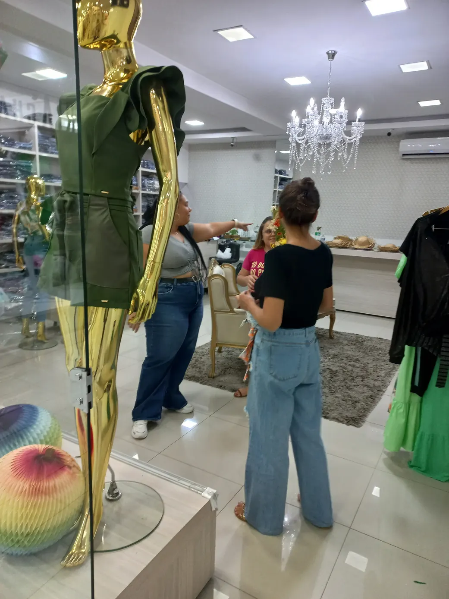
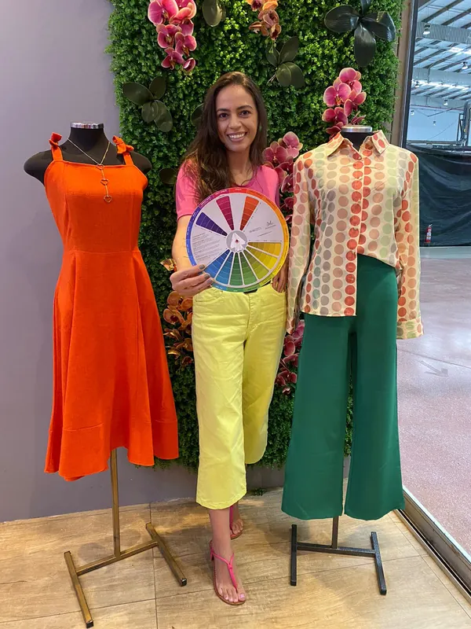

Varejo de moda
Atena Moda Feminina
Atendimento presencial e on-line, auxílio em vitrinismo e visual merchandising, apoio à gerência e fechamento de vendas, no balcão e no virtual. Foi aqui que a moda virou rotina, e a relação com o cliente virou ofício.

